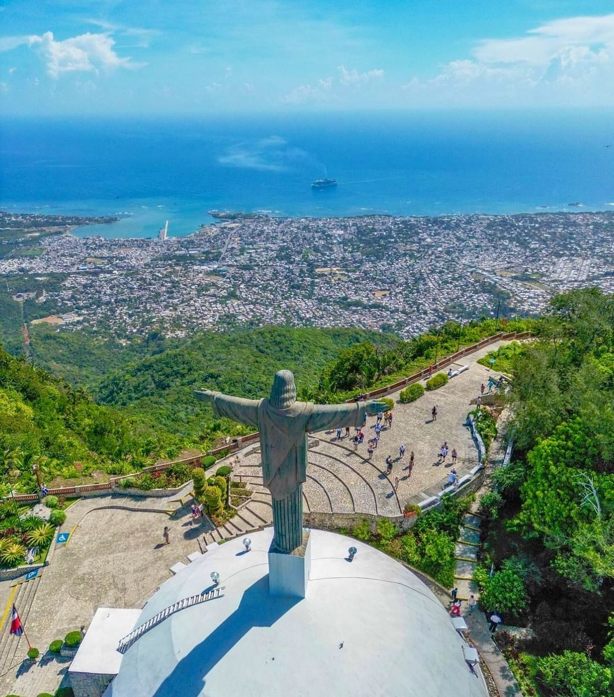

Taino Bay
Taino Bay is built into Puerto Plata itself, a short ride from Fort San Felipe, the Malecón and the Victorian centre. We meet you outside the terminal gate and you are in the old town almost immediately.

Puerto Plata · North Coast · Dominican Republic
The airport is in this city and both cruise piers are on this bay, so almost everyone who visits the north coast passes through Puerto Plata. If you are staying here, the drive is the shortest we do — and the price is agreed before you leave home.
The short version
Puerto Plata is the capital of the province of the same name and the main city of the Dominican north coast. Its airport, Gregorio Luperón International (POP), serves the whole coast, and both cruise terminals — Taino Bay in the city and Amber Cove in Maimón — sit on its bay. Most visitors stay either in the historic centre or in Playa Dorada, the resort strip just east of it. SG Caribbean Transfers & Tours runs private door-to-door transfers from POP into Puerto Plata and Playa Dorada at a fixed US$38.95 for 1 to 6 guests, with no prepayment: you pay your driver when you arrive, in cash or by PayPal, Cash App or Zelle.
Arriving by air
Puerto Plata has its own international airport, so for this destination the answer is simple. The other four are on the far side of the mountains or the far side of the country — worth knowing before you book a cheap flight into the wrong airport.
| Airport | Code | Fixed price |
|---|---|---|
| Puerto Plata — Gregorio Luperón Intl. | POP | US$38.95 |
| Santiago — Cibao Intl. | STI | US$98.50 |
| Samaná — El Catey Intl. | AZS | On request |
| Santo Domingo — Las Américas Intl. | SDQ | US$219 |
| Punta Cana Intl. | PUJ | US$425 |
Add US$5 per passenger above six. The US$38.95 covers the city and Playa Dorada alike. Every price in the table is confirmed and fixed in writing before you travel; only the Samaná fare is still quoted on request, because we will not put a guess on a public page. Prices are per vehicle, not per person.
One WhatsApp message is enough — no account, no form, no card details. Tell us how many bags are coming with you and we send the right vehicle. We reply with the price confirmed in writing.
If you land two hours late, the pickup moves two hours later. Your driver waits at no extra cost — delays are our problem, not yours.
Your driver meets you inside with a sign, helps with the luggage and drives you to your hotel, villa or apartment in Puerto Plata. Ask for a supermarket or ATM stop on the way and it costs nothing extra.
Arriving by cruise ship
Both of the north coast's cruise terminals belong to this city, which makes Puerto Plata the one destination you can see properly on a port call without watching the clock all day.
Taino Bay is built into Puerto Plata itself, a short ride from Fort San Felipe, the Malecón and the Victorian centre. We meet you outside the terminal gate and you are in the old town almost immediately.
Amber Cove sits in the bay at Maimón, west of the city. The road into Puerto Plata runs along the coast, past the Cofresí turn-off, and drops you at the fort or the cable car station.
A typical Puerto Plata port call lasts 8 to 9 hours. Because the city is right here, you can fit the cable car, the fort and the old town into one relaxed day and still be back at the ship early. We plan every cruise day backwards from your all-aboard time and return you to the pier with a margin, never on the dot. If you would rather use the day for a beach further along the coast, say so and we will tell you honestly what fits.
Why book us
The airport sits close enough to the city that people assume the taxi rank will be simple. It is a lottery. We are the option where the number you were told is the number you pay.
| What matters | SG Caribbean | Airport taxi | Shared shuttle | Rental car |
|---|---|---|---|---|
| Price | Fixed and confirmed in writing before you travel | Negotiated at the kerb, often higher at night | Cheap per seat, but usually per person | Daily rate plus insurance, fuel and parking |
| If the flight is late | We track the flight number and move the pickup — no extra charge | Whoever is still on the rank at that hour | The van usually leaves without you | The desk may already be closed |
| Who is in the vehicle | Only your group, in a private air-conditioned van | Only your group | Whoever else booked that run | You, driving |
| Luggage and extra bags | Tell us the count and we send a vehicle that fits it — no surcharge | Depends entirely on the car that turns up | Often refused or charged as an extra seat | Only if you booked the right size of car |
| Paying | Cash, PayPal, Cash App or Zelle on arrival — nothing up front | Cash, rate agreed on the spot | Usually prepaid online | Card, plus a security deposit held |
| Child seats | Free — tell us the ages and they are fitted before pickup | Rarely available | Rarely available | A paid add-on |
One more thing that does not fit in a table: we live here. Saul, Sariel, Luis and Leuris drive this coast every day, speak English and Spanish, and will tell you honestly which beach is worth your afternoon.
Once you are here
Puerto Plata is the oldest city on this coast and it wears it: a Victorian centre, a Spanish fort and a mountain with a cable car up it. These are the places our guests actually ask us to take them to.
The stone fort at the mouth of the harbour, built by the Spanish in the 1500s and the oldest still standing in the Americas. Small enough to see properly in half an hour, and the view back across the bay is the reason to climb it.
The teleférico climbs the mountain that stands over the city, to botanical gardens and a Christ the Redeemer statue at the top. On a clear morning you can see the whole coast from Sosúa round to Maimón. Go early: the cloud usually arrives with the afternoon.
The resort strip just east of the city: a gated cluster of hotels around a golf course, with a calm stretch of sand in front of it. If your booking says "Puerto Plata" and shows an all-inclusive, this is almost certainly where you are staying.
Around Parque Central, streets of wooden Victorian houses painted in colours that look invented until you see them. The Malecón runs along the seafront from there and is where the city actually goes in the evening.
This coast is called the Amber Coast for a reason: the mountains behind the city hold some of the finest amber deposits in the world, insects and all. The museum is in a Victorian mansion and takes about as long as the rain shower that sent you into it.
The marine park along the coast road west of the city, in Cofresí. The standard family day out from Puerto Plata. See the full Cofresí guide.
On the north coast of the Dominican Republic, capital of the province of the same name. The city sits on a bay beneath Pico Isabel de Torres, with the airport to the east, the resort strip of Playa Dorada between the two, and the cruise terminals on the bay itself.
US$38.95 one way, per vehicle, for 1 to 6 guests. Each passenger above six adds US$5. That price is fixed and confirmed in writing before you travel — there is no surge, no night rate and no luggage surcharge.
Its own: Gregorio Luperón International Airport (POP) serves the city directly and is the airport nearly every visitor to this coast uses. Santiago (Cibao, STI) is the alternative, inland beyond the mountains. Everything else means crossing the country.
Yes, and we do it regularly — but both are on the other side of the country and mean several hours on the road. We quote them on request rather than publishing a figure, because we only publish prices we have confirmed. Ask on WhatsApp and you get a fixed number, and an honest journey time, back the same day.
Both piers belong to this city, so it is the shortest shore transfer we run. Taino Bay is built into Puerto Plata itself; Amber Cove is in the bay at Maimón, just west. We meet you outside the terminal gate and plan the day backwards from your ship's all-aboard time.
No. There is no Uber or Lyft service in Puerto Plata, and none on this stretch of the coast. Your realistic options are a pre-booked private transfer, a local taxi negotiated on the spot, or a motoconcho for short hops in town.
Playa Dorada is a gated resort cluster around a golf course: calm beach, everything on site, nothing much to walk to. The city is the opposite — the fort, the Victorian streets, the Malecón and real restaurants, but no resort beach on your doorstep. Our fixed US$38.95 from the airport covers either, so pick on how you like to spend a week, not on the transfer.
No. Nothing is paid up front and no card details are taken. You pay your driver on arrival, in cash (US dollars or Dominican pesos) or by PayPal, Cash App or Zelle. The reservation is confirmed by message, not by payment.
Yes. Playa Dorada is gated, so we need the hotel name when you book — the driver gives it at the gate and meets you at your lobby, not at the entrance to the complex. Same for the villa communities around Costambar and Cofresí.
Yes — we operate 24 hours a day, every day of the year. Flights into Puerto Plata land and leave at awkward hours, and a pre-dawn departure to the airport is an ordinary morning for us. Send the flight time and a driver will be outside.
Send us your flight number, your arrival date and how many of you are travelling. You get a fixed price back in writing, and a driver waiting at arrivals with your name on a sign.